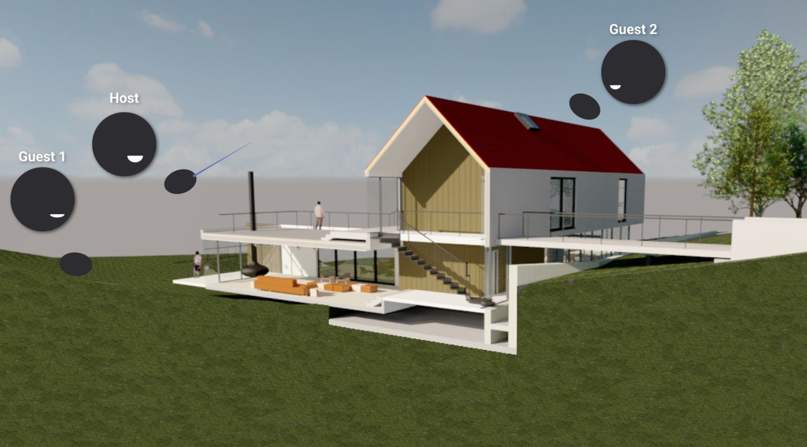
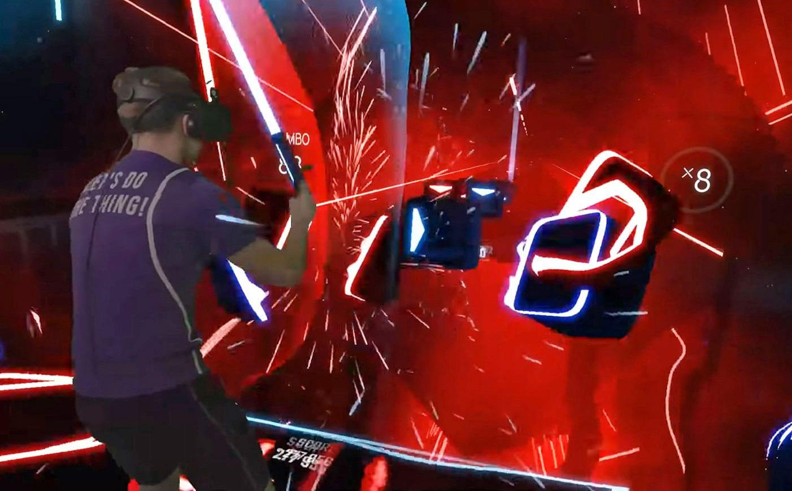

Papers have noted the usefulness of VR videos and informational tutorials in order to teach medical procedure to nurses and doctors. Being in a first-person, interactive position is often a lot more tangible to real practice when it comes to healthcare.
For instance, an article by eInfoChips notes the usefulness of XR in tumour imaging, improving depth perception and the quality of obtainable images.
This concept is also generally applicable to science as a whole. Showing and modelling concepts related to physics or biology is far easier when applications made via VR allow for easier communication between an experienced Computer Scientist and a trained Physicist or Biologist.
Architecture is a difficult field of work in that it can be incredibly difficult to judge whether a design will work in practice. A variety of VR applications have been designed to allow designers to witness what their theorized solution might look like in real time, allowing for aesthetic changes when necessary.

Oculus Quest, for instance, has such an application called SENTIO VR. This application can be used on 2D floor plans to produce 3D models in real time, which then comes with 3D walkthroughs that can be done using the Quest headset.
This can then be cast into a professional virtual tour that can be sent to investors or those interested in the final product. This is incredibly helpful to any architect trying to communicate their ideas to a layman, or to anyone that doesn't have expert knowledge.
Virtual Reality is an experiential activity, which supports a constructivist approach to learning. This is noted by Christou 2010, which goes on to explore how knowledge is gained via pulling from previous experiences. Where it may be difficult to learn something by reading or listening, it can often be gained by performing the activity, similar to attempting maths problems in order to gain a better understanding of areas of mathematics.
The paper goes on to suggest that students who engage with material delivered in this manner are more likely to retain the material and recall it at a later stage.
A variety of papers similar to this one go on to describe how this is potentially especially helpful with younger children, given the high energy nature of a large amount of young students. This is more so the case for students with conditions like ADHD.
Ever since the advent of the Oculus Rift, VR gaming has become a much more accessible leisurely activity. This has later flourished into other companies and products building on the original product's success, e.g:
This is along with a variety of playable games, like VRChat and Beatsaber, that have come into relatively mainstream recognition.
New concepts are being produced everyday, and the open-source VR projecs are consistently being produced with the help of associated Unity packages to help production.